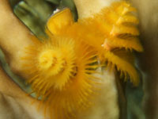

Жёлтый Спиробранхус
Синий коралловый червь
( Spirobranchus giganteus )
На фото видны две синие спирали щупалец. Слева крышечка от домика. Домик - это длинная трубка, давно приросшая к кораллу. После этого коралл вырос вокруг трубки и окончательно её замуровал. В принципе, червь может выбежать из своего домика, если он разрушится. Это опасно, и червь никогда не выбегает. По мере роста червь не меняет трубку, как это делают раки отшельники, и не линяет, как это делают крабы, а выращивает немного дополнительной длины трубки.